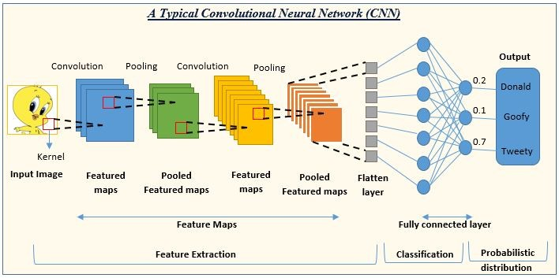
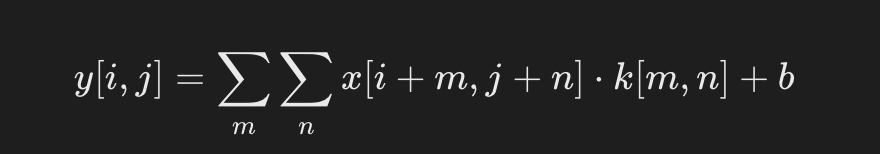
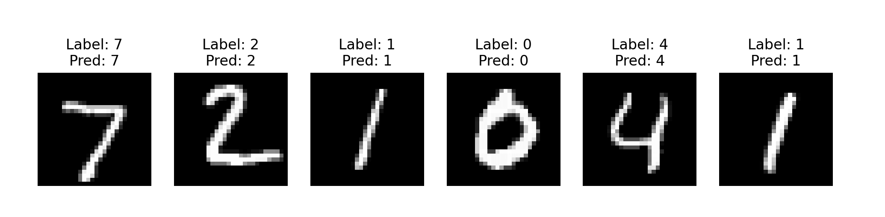

PyTorch Redes Neuronales Convolucionales
Las Redes Neuronales Convolucionales (Convolutional Neural Networks, CNN) de PyTorch son un tipo de modelos de aprendizaje profundo especialmente diseñados para procesar datos con estructura de cuadrícula, como las imágenes.
Las CNN son una tecnología central en tareas de visión por computadora, como clasificación de imágenes, detección de objetos y segmentación.
La siguiente imagen muestra la estructura y el flujo de trabajo de una red neuronal convolucional (CNN) típica, utilizada para tareas de reconocimiento de imágenes.

En la figura, la capa de salida de la CNN proporciona las probabilidades de tres clases: Donald (0.2), Goofy (0.1) y Tweety (0.7), lo que indica que la red considera que la imagen de entrada es muy probablemente Tweety.
A continuación se ofrece una breve descripción de cada parte:
-
Imagen de entrada: los datos de imagen originales que recibe la red.
-
Convolución: se utiliza un núcleo de convolución (Kernel) que se desliza sobre la imagen de entrada para extraer características y generar mapas de características (Feature Maps).
-
Agrupación (Pooling): normalmente después de la capa convolucional, se reduce el tamaño de los mapas de características mediante agrupación máxima o promedio, conservando las características importantes y generando mapas de características agrupados (Pooled Feature Maps).
-
Extracción de características: mediante la combinación de múltiples capas convolucionales y de agrupación, se extraen progresivamente características de alto nivel de la imagen.
-
Capa de aplanado (Flatten Layer): convierte los mapas de características multidimensionales en un vector unidimensional para poder introducirlo en la capa totalmente conectada.
-
Capa totalmente conectada (Fully Connected Layer): similar a las capas de redes neuronales tradicionales, se utiliza para mapear las características extraídas a las clases de salida.
-
Clasificación: es la capa de salida de la red, que clasifica según la salida de la capa totalmente conectada.
-
Distribución de probabilidad: la capa de salida proporciona la probabilidad de cada clase, indicando la probabilidad de que la imagen de entrada pertenezca a cada categoría.
Estructura básica de una red neuronal convolucional
1. Capa de entrada
Recibe los datos de imagen originales. La imagen generalmente se representa como un arreglo tridimensional, donde dos dimensiones representan el ancho y la altura de la imagen, y la tercera dimensión representa los canales de color (por ejemplo, las imágenes RGB tienen tres canales).
2. Capa convolucional
Utiliza núcleos de convolución para extraer características locales, como bordes, texturas, etc.
Fórmula:

- x: imagen de entrada.
- k: núcleo de convolución (matriz de pesos).
- b: sesgo (bias).
Aplica un conjunto de filtros aprendibles (o núcleos de convolución) sobre la imagen de entrada para extraer características locales.
Cada filtro se desliza sobre la imagen de entrada generando un mapa de características (Feature Map), que representa la activación del filtro en diferentes posiciones.
La capa convolucional puede tener múltiples filtros; cada filtro genera un mapa de características y todos juntos forman un conjunto de mapas de características.
3. Función de activación
Normalmente, después de la capa convolucional se aplica una función de activación no lineal, como ReLU (Rectified Linear Unit), para introducir no linealidad y permitir que la red aprenda patrones más complejos.
La función ReLU se define como:f(x)=max(0,x), es decir, si la entrada es menor que 0, la salida es 0; de lo contrario, la salida es el valor de entrada.
4. Capa de agrupación (Pooling Layer)
- Se utiliza para reducir las dimensiones espaciales del mapa de características, disminuyendo la cantidad de cálculo y el número de parámetros, mientras se conserva la información de características más importante.
- Las operaciones de agrupación más comunes son la agrupación máxima (Max Pooling) y la agrupación promedio (Average Pooling).
- La agrupación máxima selecciona el valor máximo dentro de la región, mientras que la agrupación promedio calcula el valor promedio dentro de la región.
5. Capa de normalización (opcional)
- Por ejemplo, normalización de respuesta local (Local Response Normalization, LRN) o normalización por lotes (Batch Normalization).
- Estas capas ayudan a acelerar el proceso de entrenamiento y mejoran la estabilidad del modelo.
6. Capa totalmente conectada
- Al final de la CNN, los mapas de características extraídos por las capas anteriores se aplanan (Flatten) en un vector unidimensional y luego se introducen en la capa totalmente conectada.
- Cada neurona de la capa totalmente conectada está conectada a todas las neuronas de la capa anterior, para integrar las características y realizar la clasificación o regresión final.
7. Capa de salida
Según la tarea, la capa de salida puede tener diferentes formas.
Para tareas de clasificación, generalmente se utiliza la función Softmax para convertir las salidas en una distribución de probabilidad, indicando la probabilidad de que la entrada pertenezca a cada clase.
8. Función de pérdida
Se utiliza para medir la diferencia entre las predicciones del modelo y las etiquetas reales.
Las funciones de pérdida comunes incluyen la pérdida de entropía cruzada (Cross-Entropy Loss) para tareas de clasificación múltiple y el error cuadrático medio (Mean Squared Error, MSE) para tareas de regresión.
9. Optimizador
Se utiliza para actualizar los pesos de la red según el gradiente de la función de pérdida. Los optimizadores comunes incluyen descenso de gradiente estocástico (SGD), Adam, RMSprop, etc.
10. Regularización (opcional)
Incluye técnicas como Dropout, regularización L1/L2, para evitar el sobreajuste del modelo.
Estas capas pueden apilarse para formar estructuras de red más profundas, mejorando así la capacidad de aprendizaje del modelo.
La profundidad y la complejidad de una CNN se pueden ajustar según los requisitos de la tarea.
Implementación de una CNN en PyTorch
El siguiente ejemplo muestra cómo construir un modelo CNN simple con PyTorch para la clasificación de dígitos del conjunto de datos MNIST.
Pasos principales:
- Carga y preprocesamiento de datos: usar
torchvisionpara cargar y preprocesar los datos MNIST. - Construcción del modelo: definir capas convolucionales, capas de agrupación y capas totalmente conectadas.
- Entrenamiento: entrenar el modelo mediante la función de pérdida y el optimizador.
- Evaluación: calcular la precisión del modelo en el conjunto de prueba.
- Visualización: mostrar algunas muestras de prueba y sus predicciones.
1. Importar bibliotecas necesarias
import torch import torch.nn as nn import torch.nn.functional as F import torch.optim as optim
2. Carga de datos
Usar el conjunto de datos MNIST proporcionado por torchvision para cargar y preprocesar los datos.
Ejemplo
transforms.ToTensor(), # Convertir a tensor
transforms.Normalize((0.5,), (0.5,)) # Normalizar a [-1, 1]
])
# Cargar el conjunto de datos MNIST
train_dataset = datasets.MNIST(root='./data', train=True, transform=transform, download=True)
test_dataset = datasets.MNIST(root='./data', train=False, transform=transform, download=True)
train_loader = torch.utils.data.DataLoader(dataset=train_dataset, batch_size=64, shuffle=True)
test_loader = torch.utils.data.DataLoader(dataset=test_dataset, batch_size=64, shuffle=False)
3. Definir el modelo CNN
Usarnn.Modulepara construir una CNN.Ejemplo
def __init__(self):
super(SimpleCNN, self).__init__()
# Definir capa convolucional: 1 canal de entrada, 32 canales de salida, tamaño de núcleo 3x3
self.conv1 = nn.Conv2d(1, 32, kernel_size=3, stride=1, padding=1)
# Definir capa convolucional: 32 canales de entrada, 64 canales de salida
self.conv2 = nn.Conv2d(32, 64, kernel_size=3, stride=1, padding=1)
# Definir capa totalmente conectada
self.fc1 = nn.Linear(64 * 7 * 7, 128) # Tamaño de entrada = tamaño del mapa de características * número de canales
self.fc2 = nn.Linear(128, 10) # 10 clases
def forward(self, x):
x = F.relu(self.conv1(x)) # Primera capa convolucional + ReLU
x = F.max_pool2d(x, 2) # Agrupación máxima
x = F.relu(self.conv2(x)) # Segunda capa convolucional + ReLU
x = F.max_pool2d(x, 2) # Agrupación máxima
x = x.view(-1, 64 * 7 * 7) # Operación de aplanado
x = F.relu(self.fc1(x)) # Capa totalmente conectada + ReLU
x = self.fc2(x) # Salida de la capa totalmente conectada
return x
# Crear instancia del modelo
model = SimpleCNN()
4. Definir la función de pérdida y el optimizador
Usar pérdida de entropía cruzada y optimizador de descenso de gradiente estocástico.
criterion = nn.CrossEntropyLoss() # 多分类交叉熵损失 optimizer = optim.SGD(model.parameters(), lr=0.01, momentum=0.9) # 学习率和动量
5. Entrenar el modelo
Entrenar el modelo durante 5 épocas, y después de cada época imprimir la pérdida de entrenamiento.
Ejemplo
model.train() # Establecer modo de entrenamiento
for epoch in range(num_epochs):
total_loss = 0
for images, labels in train_loader:
# Propagación hacia adelante
outputs = model(images)
loss = criterion(outputs, labels)
# Propagación hacia atrás
optimizer.zero_grad()
loss.backward()
optimizer.step()
total_loss += loss.item()
print(f"Epoch [{epoch+1}/{num_epochs}], Loss: {total_loss / len(train_loader):.4f}")
6. Probar el modelo
Evaluar la precisión del modelo en el conjunto de prueba.
Ejemplo
correct = 0
total = 0
with torch.no_grad(): # No es necesario calcular gradientes durante la evaluación
for images, labels in test_loader:
outputs = model(images)
_, predicted = torch.max(outputs, 1) # Predecir la clase
total += labels.size(0)
correct += (predicted == labels).sum().item()
accuracy = 100 * correct / total
print(f"Test Accuracy: {accuracy:.2f}%")
7. Código completo
El código completo es el siguiente:
Ejemplo
import torch.nn as nn
import torch.nn.functional as F
import torch.optim as optim
from torchvision import datasets, transforms
# 1. Carga y preprocesamiento de datos
transform = transforms.Compose([
transforms.ToTensor(), # Convertir a tensor
transforms.Normalize((0.5,), (0.5,)) # Normalizar a [-1, 1]
])
# Cargar el conjunto de datos MNIST
train_dataset = datasets.MNIST(root='./data', train=True, transform=transform, download=True)
test_dataset = datasets.MNIST(root='./data', train=False, transform=transform, download=True)
train_loader = torch.utils.data.DataLoader(dataset=train_dataset, batch_size=64, shuffle=True)
test_loader = torch.utils.data.DataLoader(dataset=test_dataset, batch_size=64, shuffle=False)
# 2. Definir el modelo CNN
class SimpleCNN(nn.Module):
def __init__(self):
super(SimpleCNN, self).__init__()
# Definir capas convolucionales
self.conv1 = nn.Conv2d(1, 32, kernel_size=3, stride=1, padding=1) # Entrada de 1 canal, salida de 32 canales
self.conv2 = nn.Conv2d(32, 64, kernel_size=3, stride=1, padding=1) # Entrada de 32 canales, salida de 64 canales
# Definir capas totalmente conectadas
self.fc1 = nn.Linear(64 * 7 * 7, 128) # Aplanar y luego pasar a la capa totalmente conectada
self.fc2 = nn.Linear(128, 10) # 10 clases
def forward(self, x):
x = F.relu(self.conv1(x)) # Primera capa convolucional + ReLU
x = F.max_pool2d(x, 2) # Max pooling
x = F.relu(self.conv2(x)) # Segunda capa convolucional + ReLU
x = F.max_pool2d(x, 2) # Max pooling
x = x.view(-1, 64 * 7 * 7) # Aplanar
x = F.relu(self.fc1(x)) # Capa totalmente conectada + ReLU
x = self.fc2(x) # Salida de la última capa
return x
# Crear una instancia del modelo
model = SimpleCNN()
# 3. Definir la función de pérdida y el optimizador
criterion = nn.CrossEntropyLoss() # Pérdida de entropía cruzada para clasificación múltiple
optimizer = optim.SGD(model.parameters(), lr=0.01, momentum=0.9)
# 4. Entrenamiento del modelo
num_epochs = 5
model.train() # Establecer el modelo en modo de entrenamiento
for epoch in range(num_epochs):
total_loss = 0
for images, labels in train_loader:
outputs = model(images) # Propagación hacia adelante
loss = criterion(outputs, labels) # Calcular la pérdida
optimizer.zero_grad() # Vaciar gradientes
loss.backward() # Propagación hacia atrás
optimizer.step() # Actualizar parámetros
total_loss += loss.item()
print(f"Epoch [{epoch+1}/{num_epochs}], Loss: {total_loss / len(train_loader):.4f}")
# 5. Prueba del modelo
model.eval() # Establecer el modelo en modo de evaluación
correct = 0
total = 0
with torch.no_grad(): # Desactivar el cálculo de gradientes
for images, labels in test_loader:
outputs = model(images)
_, predicted = torch.max(outputs, 1)
total += labels.size(0)
correct += (predicted == labels).sum().item()
accuracy = 100 * correct / total
print(f"Test Accuracy: {accuracy:.2f}%")
Explicación de los resultados
1. Pérdida de entrenamiento de salida
En el código, se imprime la pérdida promedio una vez por cada época, por ejemplo:
Epoch [1/5], Loss: 0.2325 Epoch [2/5], Loss: 0.0526 Epoch [3/5], Loss: 0.0366 Epoch [4/5], Loss: 0.0273 Epoch [5/5], Loss: 0.0221
Explicación:La disminución gradual de la pérdida indica que el modelo está convergiendo paso a paso.
2. Precisión del conjunto de prueba
El código imprime la precisión de clasificación final en el conjunto de prueba, por ejemplo:
Test Accuracy: 98.96%
Explicación:La precisión de clasificación del modelo en el conjunto de prueba MNIST es del 98.96 %, lo cual es un buen resultado para un modelo CNN simple.
7. Visualización de resultados
Podemos visualizar algunas muestras y sus predicciones en los datos de prueba.
Ejemplo
import torch.nn as nn
import torch.nn.functional as F
import torch.optim as optim
from torchvision import datasets, transforms
import matplotlib.pyplot as plt
# 1. Carga y preprocesamiento de datos
transform = transforms.Compose([
transforms.ToTensor(), # Convertir a tensor
transforms.Normalize((0.5,), (0.5,)) # Normalizar a [-1, 1]
])
# Cargar el conjunto de datos MNIST
train_dataset = datasets.MNIST(root='./data', train=True, transform=transform, download=True)
test_dataset = datasets.MNIST(root='./data', train=False, transform=transform, download=True)
train_loader = torch.utils.data.DataLoader(dataset=train_dataset, batch_size=64, shuffle=True)
test_loader = torch.utils.data.DataLoader(dataset=test_dataset, batch_size=64, shuffle=False)
# 2. Definir el modelo CNN
class SimpleCNN(nn.Module):
def __init__(self):
super(SimpleCNN, self).__init__()
# Definir capas convolucionales
self.conv1 = nn.Conv2d(1, 32, kernel_size=3, stride=1, padding=1) # Entrada de 1 canal, salida de 32 canales
self.conv2 = nn.Conv2d(32, 64, kernel_size=3, stride=1, padding=1) # Entrada de 32 canales, salida de 64 canales
# Definir capas totalmente conectadas
self.fc1 = nn.Linear(64 * 7 * 7, 128) # Aplanar y luego pasar a la capa totalmente conectada
self.fc2 = nn.Linear(128, 10) # 10 clases
def forward(self, x):
x = F.relu(self.conv1(x)) # Primera capa convolucional + ReLU
x = F.max_pool2d(x, 2) # Max pooling
x = F.relu(self.conv2(x)) # Segunda capa convolucional + ReLU
x = F.max_pool2d(x, 2) # Max pooling
x = x.view(-1, 64 * 7 * 7) # Aplanar
x = F.relu(self.fc1(x)) # Capa totalmente conectada + ReLU
x = self.fc2(x) # Salida de la última capa
return x
# Crear una instancia del modelo
model = SimpleCNN()
# 3. Definir la función de pérdida y el optimizador
criterion = nn.CrossEntropyLoss() # Pérdida de entropía cruzada para clasificación múltiple
optimizer = optim.SGD(model.parameters(), lr=0.01, momentum=0.9)
# 4. Entrenamiento del modelo
num_epochs = 5
model.train() # Establecer el modelo en modo de entrenamiento
for epoch in range(num_epochs):
total_loss = 0
for images, labels in train_loader:
outputs = model(images) # Propagación hacia adelante
loss = criterion(outputs, labels) # Calcular la pérdida
optimizer.zero_grad() # Vaciar gradientes
loss.backward() # Propagación hacia atrás
optimizer.step() # Actualizar parámetros
total_loss += loss.item()
print(f"Epoch [{epoch+1}/{num_epochs}], Loss: {total_loss / len(train_loader):.4f}")
# 5. Prueba del modelo
model.eval() # Establecer el modelo en modo de evaluación
correct = 0
total = 0
with torch.no_grad(): # Desactivar el cálculo de gradientes
for images, labels in test_loader:
outputs = model(images)
_, predicted = torch.max(outputs, 1)
total += labels.size(0)
correct += (predicted == labels).sum().item()
accuracy = 100 * correct / total
print(f"Test Accuracy: {accuracy:.2f}%")
# 6. Visualizar los resultados de la prueba
dataiter = iter(test_loader)
images, labels = next(dataiter)
outputs = model(images)
_, predictions = torch.max(outputs, 1)
fig, axes = plt.subplots(1, 6, figsize=(12, 4))
for i in range(6):
axes[i].imshow(images[i][0], cmap='gray')
axes[i].set_title(f"Label: {labels[i]}\nPred: {predictions[i]}")
axes[i].axis('off')
plt.show()
La visualización de resultados muestra las etiquetas reales y las predicciones de 6 muestras de prueba, por ejemplo:

En la esquina superior izquierda de la imagen se encuentra el dígito escrito a mano.
La sección del título muestra el valor predicho por el modelo y la etiqueta verdadera.
Errores comunes a tener en cuenta
Al descargar el conjunto de datos MNIST, la verificación del certificado SSL falló, lo que impidió descargar los datos.
Downloading http://yann.lecun.com/exdb/mnist/train-images-idx3-ubyte.gz Failed to download (trying next): <urlopen error [SSL: CERTIFICATE_VERIFY_FAILED] certificate verify failed: unable to get local issuer certificate (_ssl.c:1129)> ...
Soluciones
Abre la terminal y ejecuta el siguiente comando para instalar/actualizar el certificado SSL:
/Applications/Python\ 3.x/Install\ Certificates.command
Donde 3.x debe reemplazarse con la versión de Python que tienes instalada.
Después de ejecutar este comando, vuelve a ejecutar tu código Python. Debería poder descargar el conjunto de datos MNIST correctamente.
Otras extensiones.
Haz clic para compartir mis notas
<p style="font-size:14px;">¡Las notas deben ser una extensión del contenido de este artículo!</p><br> <p style="font-size:12px;"><a href="../tougao.html" target="_blank">Envío de artículos, haz clic aquí</a></p> <p style="font-size:14px;"><a href="../w3cnote/runoob-user-test-intro.html" target="_blank">Cómo obtener el código de invitación de registro</a></p> <h3 class="text-muted"><i class="fa fa-info-circle" aria-hidden="true"></i> Antes de compartir notas, debes <a href=";.html" class="runoob-pop">iniciar sesión</a>!</h3> <p><a href="../w3cnote/runoob-user-test-intro.html" target="_blank">Cómo obtener el código de invitación de registro</a></p>